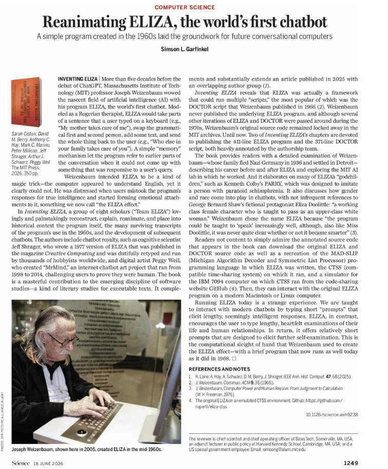

Reviews of Inventing ELIZA
What readers have made of Inventing ELIZA: How the First Chatbot Shaped the Future of AI (MIT Press, Software Studies, 2026), with a foreword by Janet H. Murray.
Published reviews
The Wall Street Journal19 August 2026
The authors of “Inventing Eliza” excavated large portions of Eliza’s code from MIT’s archives and used it to re-create Eliza running Doctor, talmudically annotating the code throughout the book… One of the book’s most powerful points is that technology is not neutral but, like any text, manifests its creators’ decisions. These choices often carry social and political weight.Matthew Hutson
Hutson, M. (2026) ‘“Inventing Eliza” Review: The Mother of All Chatbots’, The Wall Street Journal, 19 August. Available at: https://www.wsj.com/arts-culture/books/inventing-eliza-review-the-mother-of-all-chatbots
ℤ→ℤ10 August 2026
I find this book the best example of ‘critical code studies’ methodology so far and a work that can engage future research into chatbot systems.Jeffrey Starr
Starr, J. (2026) ‘Inventing ELIZA (Review)’, ℤ→ℤ, 10 August. Available at: https://ztoz.blog/posts/inventing-eliza-review/
Science18 June 2026

In Inventing ELIZA, a group of eight scholars (“Team ELIZA”) lovingly and painstakingly reconstruct, explain, reanimate, and place into historical context the program itself, the many surviving transcripts of the program’s use in the 1960s, and the development of subsequent chatbots… The book is a masterful contribution to the emerging discipline of software studies.Simson L. Garfinkel
Garfinkel, S. L. (2026) ‘Reanimating ELIZA, the world’s first chatbot’, Science, 392(6804), p. 1249, 18 June. Available at: https://doi.org/10.1126/science.aeh9238
Praise
The innovative collaboration Inventing ELIZA doesn’t just shed light on the famous first chatbot from the 1960s. It aims an array of thoughtful approaches at a software system of ever-increasing importance, incandescently illuminating ELIZA and connecting it to current developments. This book proves the importance of critical code studies and is an essential resource for understanding the past, present, and future of AI.
An extraordinary accomplishment in the history of computing. Inventing ELIZA couples important archival discoveries with careful materialist rigor. A crucial history of the present and essential reading for students and critics of AI.
Part software archaeology, part improv, Inventing ELIZA opens a backstage chat in which the recovered MAD-SLIP source code acts as a lively conversational partner, transforming a technological artifact fundamental to the history of AI into a compelling dialogue about conversations themselves.